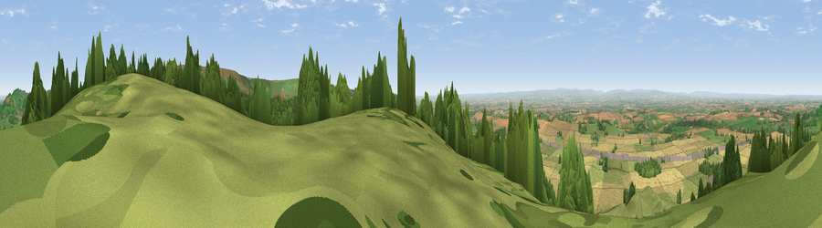

Viewpoint near Over Silton
#1373 in England · top 5% of its area beats it · near Over SiltonThe view, rendered

A 360° render of this exact spot computed from the terrain model, tree cover and land cover — summer colours, afternoon light, calibrated against photographs of famous viewpoints. Real trees, hedges and buildings will differ in detail.
The panorama
Grey silhouette: terrain skyline in each direction (720 bearings, Earth curvature and refraction included). Dashed green: skyline with trees (+15 m) and buildings (+8 m) as obstacles. Blue strip: how far the ground is visible on each bearing.
Where the view opens
Wedge length = distance to the farthest visible ground on that bearing (vegetation-aware). Rings at 10, 25 and 50 km.
What fills the view
49% grassland · 29% cropland · 20% woodland · 2% built-up
Angular shares of the visible panorama (visual magnitude), not map area. Landscape diversity 0.48 (0–1 Shannon).
Key numbers
More beautiful places nearby
The staircase of upgrades: each row has a higher view potential than everything closer. Driving times are estimates from straight-line distance, calibrated against real road routing — check an actual route before setting out.
| Place | Direction | Drive | Score |
|---|---|---|---|
| Black Hambleton | E · 3 km | ~7 min | 79.9 |
| Beacon Hill | N · 6 km | ~12 min | 84.7 |
| Carlton Bank | NE · 11 km | ~20 min | 85.1 |
| Roseberry Topping | NE · 22 km | ~37 min | 85.8 |
| Viewpoint near Lazenby | NNE · 27 km | ~43 min | 86.4 |
| Warsett Hill | NE · 36 km | ~55 min | 86.8 |
| Viewpoint near Easington | NE · 39 km | ~58 min | 90.2 |
| The Knoll | SSW · 416 km | ~395 min | 91.0 |
54.34114, -1.30742 · source: screening · position refined by local search. Computed location — check access rights before visiting.